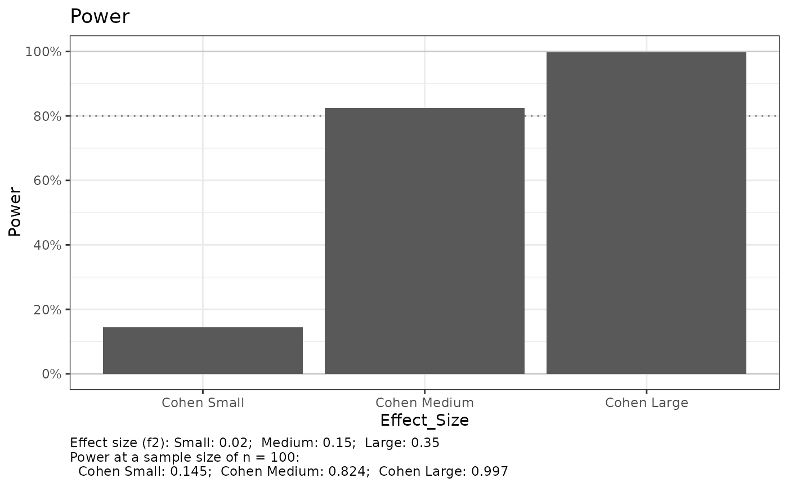
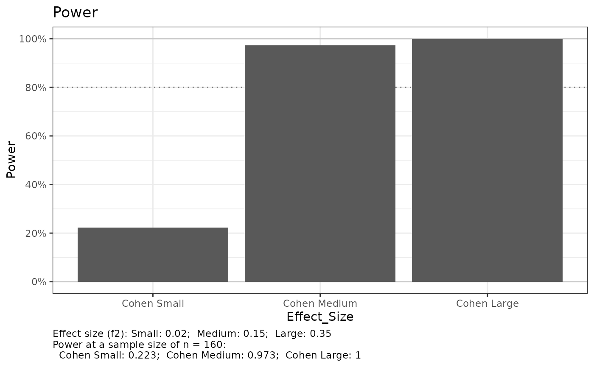
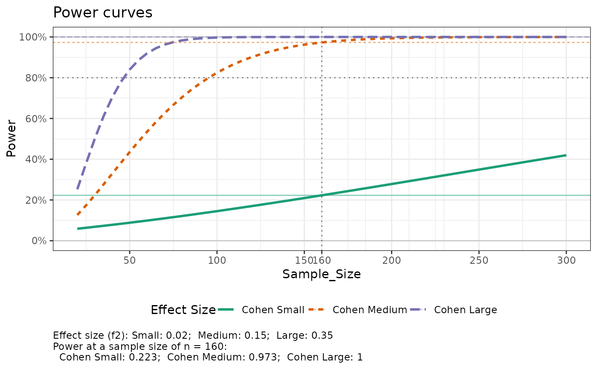
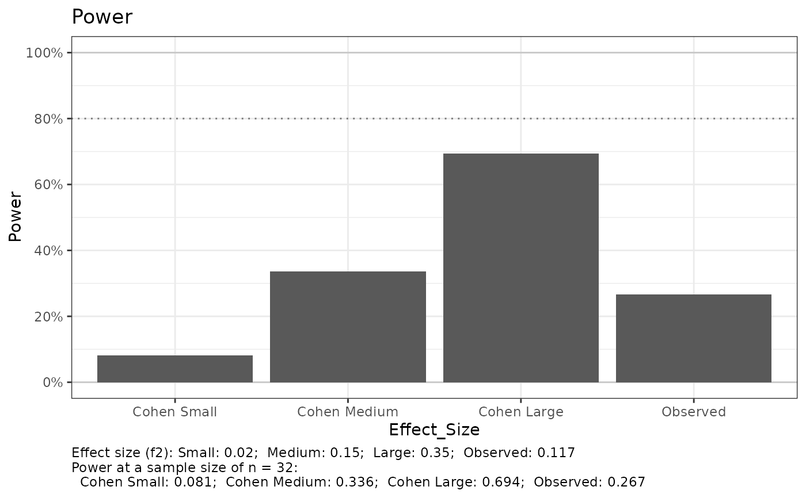
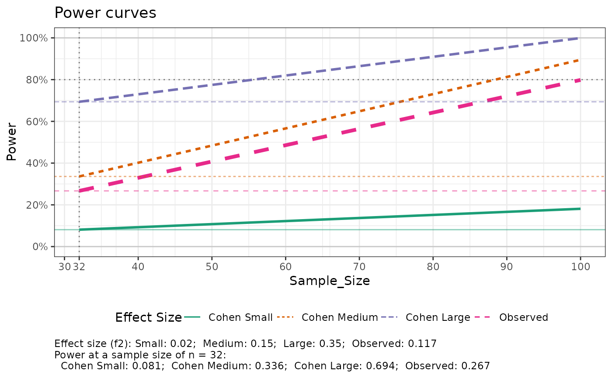
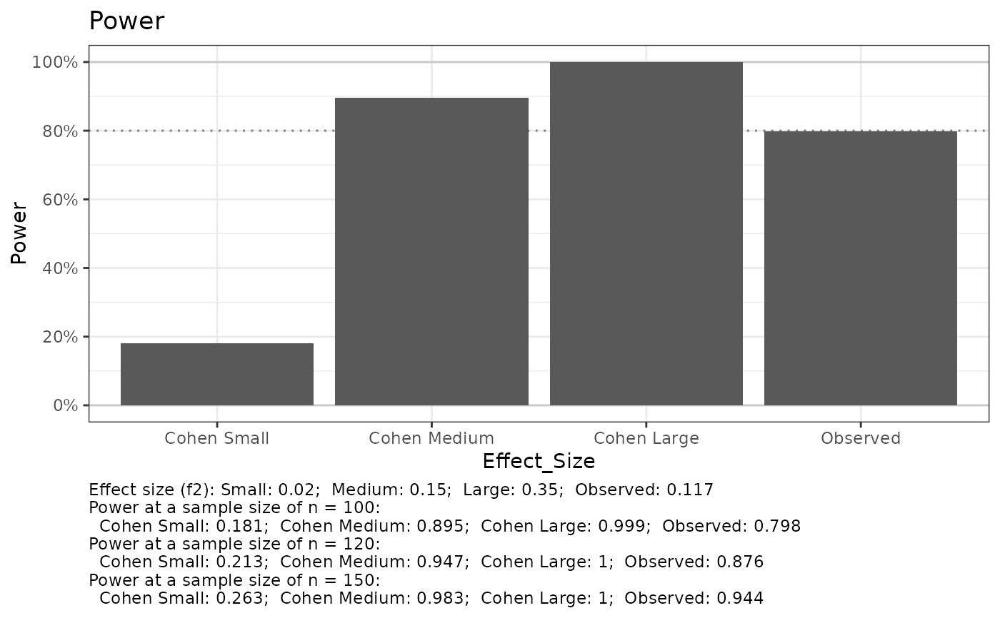
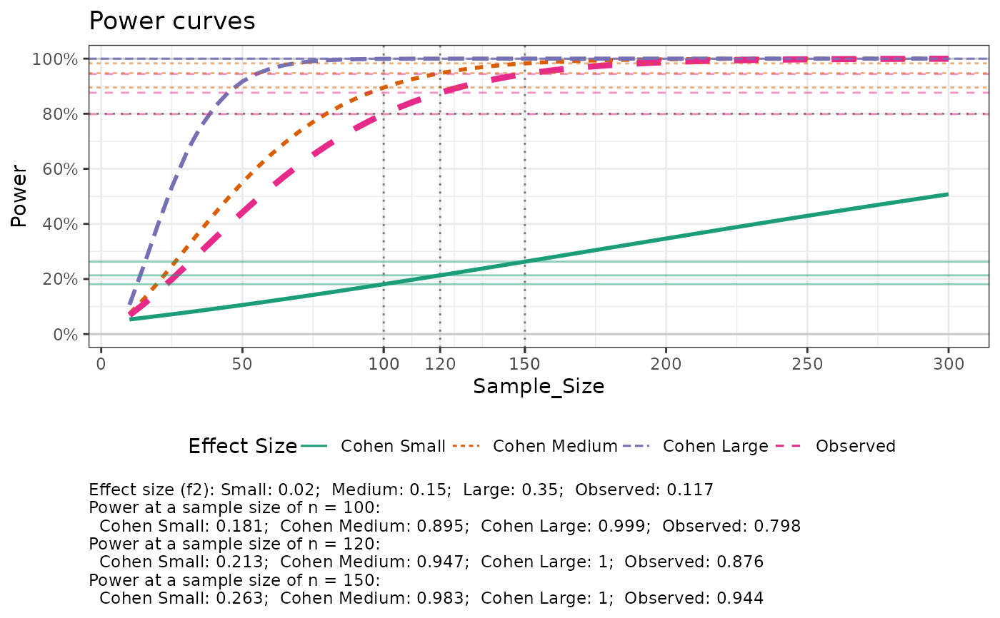

Multiple regression power analysis
e_lm_power(
dat = NULL,
formula_full = NULL,
formula_red = NULL,
fit_model_type = c("lm", "lmer")[1],
n_total,
n_param_full = NULL,
n_param_red = NULL,
sig_level = 0.05,
weights = NULL,
sw_print = TRUE,
sw_plots = TRUE,
n_plot_ref = NULL
)observed effect size data set
observed effect size full model formula, used with dat
observed effect size reduced model formula, used with dat
"lm" or "lmer", used with dat to specify how formulas should be fit
a total sample size value or list of values, used for power curve
number of parameters in full model, only used if dat is not specified
number of parameters in reduced model, only used if dat is not specified; must be fewer than n_param_full
Type-I error rate
observed effect size model fit, if it should be weighted regression
print results
create histogram and power curve plots
a sample size reference line for the plot; if null, then uses size of data, otherwise uses median of n_total. Histogram is created for first reference value in the list.
list with tables and plots of power analysis results
# without data, single n
out <-
e_lm_power(
dat = NULL
, formula_full = NULL
, formula_red = NULL
, n_total = 100
, n_param_full = 10
, n_param_red = 5
, sig_level = 0.05
, weights = NULL
, sw_print = TRUE
, sw_plots = TRUE
, n_plot_ref = NULL
)
#> Setting n_plot_ref = n_total for reference
#> Cohen reference effect size and power =============================
#> Small ---------------
#>
#> Multiple regression power calculation
#>
#> u = 5
#> v = 90
#> f2 = 0.02
#> sig.level = 0.05
#> power = 0.1451294
#>
#> Medium --------------
#>
#> Multiple regression power calculation
#>
#> u = 5
#> v = 90
#> f2 = 0.15
#> sig.level = 0.05
#> power = 0.8244431
#>
#> Large ---------------
#>
#> Multiple regression power calculation
#>
#> u = 5
#> v = 90
#> f2 = 0.35
#> sig.level = 0.05
#> power = 0.997067
#>
#> Joining with `by = join_by(Effect_Size)`
#> e_lm_power, power curve only available when length of n_total > 1

#> NULL
# without data, sequence of n for power curve
out <-
e_lm_power(
dat = NULL
, formula_full = NULL
, formula_red = NULL
, n_total = seq(20, 300, by = 5)
, n_param_full = 10
, n_param_red = 5
, sig_level = 0.05
, weights = NULL
, sw_print = TRUE
, sw_plots = TRUE
, n_plot_ref = NULL
)
#> Setting n_plot_ref = median(n_total) for reference
#> e_lm_power, not printing results when n_total > 1
#> Joining with `by = join_by(Effect_Size)`


# with data
str(dat_mtcars_e)
#> tibble [32 × 12] (S3: tbl_df/tbl/data.frame)
#> $ model: chr [1:32] "Mazda RX4" "Mazda RX4 Wag" "Datsun 710" "Hornet 4 Drive" ...
#> ..- attr(*, "label")= chr "Model"
#> $ mpg : num [1:32] 21 21 22.8 21.4 18.7 18.1 14.3 24.4 22.8 19.2 ...
#> ..- attr(*, "label")= chr "Miles/(US) gallon"
#> $ cyl : Factor w/ 3 levels "four","six","eight": 2 2 1 2 3 2 3 1 1 2 ...
#> ..- attr(*, "label")= chr "Number of cylinders"
#> $ disp : num [1:32] 160 160 108 258 360 ...
#> ..- attr(*, "label")= chr "Displacement (cu.in.)"
#> $ hp : num [1:32] 110 110 93 110 175 105 245 62 95 123 ...
#> ..- attr(*, "label")= chr "Gross horsepower"
#> $ drat : num [1:32] 3.9 3.9 3.85 3.08 3.15 2.76 3.21 3.69 3.92 3.92 ...
#> ..- attr(*, "label")= chr "Rear axle ratio"
#> $ wt : num [1:32] 2.62 2.88 2.32 3.21 3.44 ...
#> ..- attr(*, "label")= chr "Weight (1000 lbs)"
#> $ qsec : num [1:32] 16.5 17 18.6 19.4 17 ...
#> ..- attr(*, "label")= chr "1/4 mile time"
#> $ vs : Factor w/ 2 levels "V-shaped","straight": 1 1 2 2 1 2 1 2 2 2 ...
#> ..- attr(*, "label")= chr "Engine"
#> $ am : Factor w/ 2 levels "automatic","manual": 2 2 2 1 1 1 1 1 1 1 ...
#> ..- attr(*, "label")= chr "Transmission"
#> $ gear : num [1:32] 4 4 4 3 3 3 3 4 4 4 ...
#> ..- attr(*, "label")= chr "Number of forward gears"
#> $ carb : num [1:32] 4 4 1 1 2 1 4 2 2 4 ...
#> ..- attr(*, "label")= chr "Number of carburetors"
yvar <- "mpg"
xvar_full <- c("cyl", "disp", "hp", "drat", "wt", "qsec")
xvar_red <- c( "hp", "drat", "wt", "qsec")
formula_full <-
stats::as.formula(
paste0(
yvar
, " ~ "
, paste(
xvar_full
, collapse= "+"
)
)
)
formula_red <-
stats::as.formula(
paste0(
yvar
, " ~ "
, paste(
xvar_red
, collapse= "+"
)
)
)
# with data, single n
out <-
e_lm_power(
dat = dat_mtcars_e
, formula_full = formula_full
, formula_red = formula_red
, n_total = 100
, n_param_full = NULL
, n_param_red = NULL
, sig_level = 0.05
, weights = NULL
, sw_print = TRUE
, sw_plots = TRUE
, n_plot_ref = NULL
)
#> Full Model ========================================================
#> mpg ~ cyl + disp + hp + drat + wt + qsec
#> <environment: 0x55b5483186a0>
#>
#> Call:
#> lm(formula = formula_full, data = dat)
#>
#> Residuals:
#> Min 1Q Median 3Q Max
#> -4.0821 -1.3663 -0.3597 1.1147 5.1195
#>
#> Coefficients:
#> Estimate Std. Error t value Pr(>|t|)
#> (Intercept) 26.592514 13.093167 2.031 0.0535 .
#> cylsix -2.640596 1.865283 -1.416 0.1697
#> cyleight -2.464875 3.320975 -0.742 0.4652
#> disp 0.006309 0.013588 0.464 0.6466
#> hp -0.022587 0.016043 -1.408 0.1720
#> drat 1.144028 1.483543 0.771 0.4481
#> wt -3.637067 1.354395 -2.685 0.0129 *
#> qsec 0.257633 0.531785 0.484 0.6324
#> ---
#> Signif. codes: 0 ‘***’ 0.001 ‘**’ 0.01 ‘*’ 0.05 ‘.’ 0.1 ‘ ’ 1
#>
#> Residual standard error: 2.549 on 24 degrees of freedom
#> Multiple R-squared: 0.8616, Adjusted R-squared: 0.8212
#> F-statistic: 21.34 on 7 and 24 DF, p-value: 7.409e-09
#>
#> Reduced Model =====================================================
#> mpg ~ hp + drat + wt + qsec
#> <environment: 0x55b5483186a0>
#>
#> Call:
#> lm(formula = formula_red, data = dat)
#>
#> Residuals:
#> Min 1Q Median 3Q Max
#> -3.5775 -1.6626 -0.3417 1.1317 5.4422
#>
#> Coefficients:
#> Estimate Std. Error t value Pr(>|t|)
#> (Intercept) 19.25970 10.31545 1.867 0.072785 .
#> hp -0.01784 0.01476 -1.209 0.237319
#> drat 1.65710 1.21697 1.362 0.184561
#> wt -3.70773 0.88227 -4.202 0.000259 ***
#> qsec 0.52754 0.43285 1.219 0.233470
#> ---
#> Signif. codes: 0 ‘***’ 0.001 ‘**’ 0.01 ‘*’ 0.05 ‘.’ 0.1 ‘ ’ 1
#>
#> Residual standard error: 2.539 on 27 degrees of freedom
#> Multiple R-squared: 0.8454, Adjusted R-squared: 0.8225
#> F-statistic: 36.91 on 4 and 27 DF, p-value: 1.408e-10
#>
#> Setting n_plot_ref = the number of observations in the data for reference
#> e_lm_power, not printing results when n_total > 1
#> Joining with `by = join_by(Effect_Size)`
#> e_lm_power, add more values to n_total for a smoother and more accurate curve


# with data, sequence of n for power curve, multiple reference sample sizes
out <-
e_lm_power(
dat = dat_mtcars_e
, formula_full = formula_full
, formula_red = formula_red
, n_total = seq(10, 300, by = 5)
, n_param_full = NULL
, n_param_red = NULL
, sig_level = 0.05
, weights = NULL
, sw_print = TRUE
, sw_plots = TRUE
, n_plot_ref = c(100, 120, 150)
)
#> Full Model ========================================================
#> mpg ~ cyl + disp + hp + drat + wt + qsec
#> <environment: 0x55b5483186a0>
#>
#> Call:
#> lm(formula = formula_full, data = dat)
#>
#> Residuals:
#> Min 1Q Median 3Q Max
#> -4.0821 -1.3663 -0.3597 1.1147 5.1195
#>
#> Coefficients:
#> Estimate Std. Error t value Pr(>|t|)
#> (Intercept) 26.592514 13.093167 2.031 0.0535 .
#> cylsix -2.640596 1.865283 -1.416 0.1697
#> cyleight -2.464875 3.320975 -0.742 0.4652
#> disp 0.006309 0.013588 0.464 0.6466
#> hp -0.022587 0.016043 -1.408 0.1720
#> drat 1.144028 1.483543 0.771 0.4481
#> wt -3.637067 1.354395 -2.685 0.0129 *
#> qsec 0.257633 0.531785 0.484 0.6324
#> ---
#> Signif. codes: 0 ‘***’ 0.001 ‘**’ 0.01 ‘*’ 0.05 ‘.’ 0.1 ‘ ’ 1
#>
#> Residual standard error: 2.549 on 24 degrees of freedom
#> Multiple R-squared: 0.8616, Adjusted R-squared: 0.8212
#> F-statistic: 21.34 on 7 and 24 DF, p-value: 7.409e-09
#>
#> Reduced Model =====================================================
#> mpg ~ hp + drat + wt + qsec
#> <environment: 0x55b5483186a0>
#>
#> Call:
#> lm(formula = formula_red, data = dat)
#>
#> Residuals:
#> Min 1Q Median 3Q Max
#> -3.5775 -1.6626 -0.3417 1.1317 5.4422
#>
#> Coefficients:
#> Estimate Std. Error t value Pr(>|t|)
#> (Intercept) 19.25970 10.31545 1.867 0.072785 .
#> hp -0.01784 0.01476 -1.209 0.237319
#> drat 1.65710 1.21697 1.362 0.184561
#> wt -3.70773 0.88227 -4.202 0.000259 ***
#> qsec 0.52754 0.43285 1.219 0.233470
#> ---
#> Signif. codes: 0 ‘***’ 0.001 ‘**’ 0.01 ‘*’ 0.05 ‘.’ 0.1 ‘ ’ 1
#>
#> Residual standard error: 2.539 on 27 degrees of freedom
#> Multiple R-squared: 0.8454, Adjusted R-squared: 0.8225
#> F-statistic: 36.91 on 4 and 27 DF, p-value: 1.408e-10
#>
#> e_lm_power, not printing results when n_total > 1
#> Joining with `by = join_by(Effect_Size)`


out$tab_power_ref |> print(width = Inf)
#> # A tibble: 3 × 11
#> n_total n_param_full n_param_red Cohen_small_power Cohen_medium_power
#> <dbl> <dbl> <dbl> <dbl> <dbl>
#> 1 100 7 4 0.181 0.895
#> 2 120 7 4 0.213 0.947
#> 3 150 7 4 0.263 0.983
#> Cohen_large_power obs_power Cohen_small_effect_size Cohen_medium_effect_size
#> <dbl> <dbl> <dbl> <dbl>
#> 1 0.999 0.798 0.02 0.15
#> 2 1.00 0.876 0.02 0.15
#> 3 1.00 0.944 0.02 0.15
#> Cohen_large_effect_size obs_effect_size
#> <dbl> <dbl>
#> 1 0.35 0.117
#> 2 0.35 0.117
#> 3 0.35 0.117
### RMarkdown results reporting
# The results above indicate the following.
#
# 1. With the number of observations
# $n = `r out[["tab_power"]] |> dplyr::filter(n_total == 100) |> dplyr::pull(n_total)`$
# and the number of groups
# $k = `r out[["tab_power"]] |> dplyr::filter(n_total == 100) |> dplyr::pull(n_groups)`$
# 2. Observed (preliminary) power:
# * `r out[["tab_power"]] |> dplyr::filter(n_total == 100) |>
# dplyr::pull(obs_power ) |> signif(digits = 2)`.
# 3. Cohen small, medium, and large power:
# * `r out[["tab_power"]] |> dplyr::filter(n_total == 100) |>
# dplyr::pull(Cohen_small_power ) |> signif(digits = 2)`,
# * `r out[["tab_power"]] |> dplyr::filter(n_total == 100) |>
# dplyr::pull(Cohen_medium_power) |> signif(digits = 2)`, and
# * `r out[["tab_power"]] |> dplyr::filter(n_total == 100) |>
# dplyr::pull(Cohen_large_power ) |> signif(digits = 2)`.